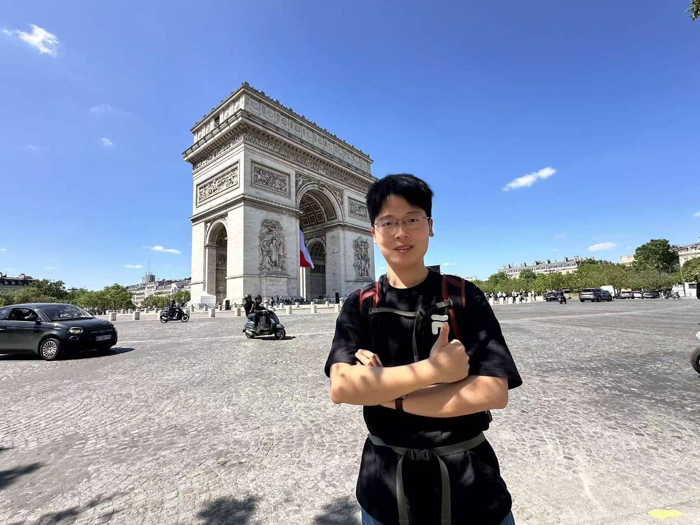

Ph.D. Candidate | School of Civil Engineering, Southeast University
Zirui Li
Infrastructure resilience, AI for engineering management, and human factor engineering.
seulzr@126.com
Southeast University, Nanjing
Zirui Li is a direct-entry Ph.D. Candidate in Civil Engineering and Construction Management at Southeast University, supervised by Distinguished Professor Qiming Li, and a recipient of the Young Elite Scientists Sponsorship Program by the China Association for Science and Technology (CAST).
Research
A connected agenda for resilient, intelligent, and human-centered engineering systems
Publications
Selected Publications
Projects
Project Portfolio
Updates
News & Academic Activities
Recognition
Honors & Academic Service
Contact
For academic correspondence, collaboration, or speaking invitations, please reach out by email.